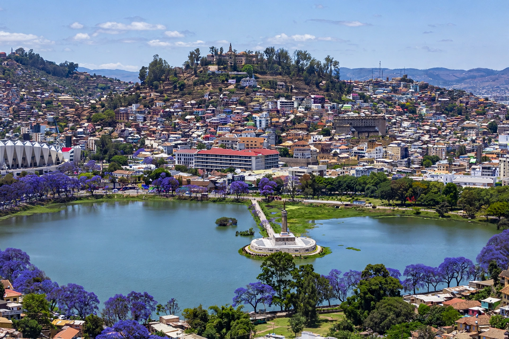

Antananarivo, often shortened to Tana, is the capital and largest city of Madagascar, located in the island's Central Highlands.
Founded around 1610 by King Andrianjaka atop the Analamanga hill, it became capital of the Merina Kingdom and, after 19th-century unification, of all Madagascar. France colonised Madagascar in 1896; independence came in 1960.
The city climbs hills around Lake Anosy, crowned by the Rova palace complex. Malagasy — an Austronesian language, unlike mainland Bantu languages — is spoken, with French also official. Madagascar is a member of the African Union.